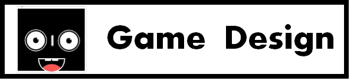
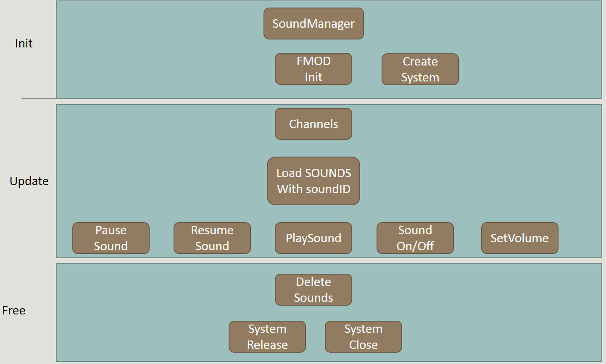

-
코드 다운받기
최범근 - Technical Director
- Main System of Engine
전반전인 엔진의 구조를 제작함. - StateManager 엔진내에서 스테이트를 관리하는 스테이트매니저. AddState,MoveState,RestartState등 다양한 기능이 있음
- Json File IO System
- Object Factory based on Components 유니티,언리얼등의 상용 엔진과 비슷한 컴포넌트 베이스의 오브젝트 팩토리. 각각의 오브젝트는 다른 컴포넌트를 가지고 있음.
- Fmod SoundManager FMOD를 이용한 SoundManager. PlaySound, StopSound,PauseSound등 다양한 기능이 존재함
- Replaying System
- Pause System
- Option State
- Game Logic Win Condition,Lose Condition등을 관리해주는 GameLogic
Jsoncpp Libary를 이용해 Json Class FileIO를 만들어 ReadFile 및 WriteFile을 용이하게 함. 이것을 통해 JSON 파일로 레벨을 불러오거나 저장할 수 있음.
레벨단계에서 플레이어의 위치,애니메이션 정보등을 프레임 단위로 저장해 레벨 클리어시 사용자의 플레이를 다시 재생하는 시스템
ESC키를 누르면 이전 스테이트가 저장된 상태에서 Pause State로 전환됨. 게임이 정지되고, Pause UI가 나타남. 게임을 재개하거나 다시 시작하거나 레벨 선택 단계로 갈수 있음
기본적인 옵션 스테이트, 해상도 조절 , 풀스크린 모드, 사운드 온오프이 가능함.- Main System of Engine
- Most of Menu State Main State,Level Select State등 대부분의 스테이트를 제작함
- Logging System
- Intergrated Imgui
- Game Launcher
- Archetype Editor
- Map Editor
레벨의 난이도를 체크하기위해서 게임의 플레이 타임, 죽은 횟수, 클리어 시간등을 체크하는 로그 시스템
Imgui Libary를 이용해 효율적인 디버깅을 가능하게 함. 모든 오브젝트들의 속성을 조절할 수 있는 오브젝트매니저, 아키타입을 추가할 수있는 아키타입 에디터, 현재의 레벨을 저장하거나 불러올 수 있는 레벨매니저, 게임내의 사운드를 재생시킬 수 있는 사운드매니저가 포함되어 있습니다.
C#으로 제작된 게임 런처. 게임 시작 전 런쳐가 실행되며, 런처에서 해상도 조절과 전체화면,언어 설정을 설정할 수 있음.
C#으로 제작된 아키타입 에디터. 게임내에서 사용될 아키타입을 제작할 수 있음.
C#으로 제작된 맵 에디터. 맵에디터를 통해서 손쉽게 레벨 제작이 가능함.
유현준 - Producer
Graphics
- Animation
- Sprites
- Camera
- Scheduling
박경욱 - Lead Designer
Physics
- Player Controller
- Map Editor
- Gravity
- Scheduling

게임 장르 :2D 플랫폼 퍼즐 게임
- 사용 엔진 : ThumbUp Engine (자체 제작 2D게임 엔진)
- 사용 언어 : C++, C
- 플랫폼 : Windows PC
- 마일스톤 : 베타
하이 컨셉
“ RoteRote는 플레이어가 목표에 도달하기 위해서 게임 속 월드를 회전시켜서 퍼즐을 풀어나가야합니다!
자세한 컨셉
플레이어는 게임 속 월드를 90도 혹은 180도로 회전시켜서 제한된 구역에서 탈출해야합니다..
플레이어는 월드에 존재하는 장애물들을 조심하여야합니다. 언제떨어질줄 모르는 박스들과 가시, 레이져들을 조심하세요! .
게임 플로우
스플래시 스크린
게임이 시작되면 Digipen로고와 팀 ThumbUp 로고 ,Fmod의 짧은 스플래시 화면이 표시됩니다. .
옵션
옵션 스테이트에서 사용자는 게임의 사운드를 켜거나 끌 수 있고, 전체화면 설정 및 크레딧을 볼 수 있습니다. .
메뉴
RoteRote에는 20개의 레벨이 존재합니다. 레벨 선택 스테이트에서 미리 그 레벨을 볼 수 있습니다..
게임스크린
게임이 시작되면 레벨마다 플레이어의 위치가 정해집니다. 각 레벨마다, 플레이어들이 그 단계를 클리어하는데 도움을 주는 장치들과 플레이어를 방해하는 여러가지 장애물이 있습니다. 플레이어가 레벨을 클리어할려면 플레이어를 특정한 위치에 도달시켜야 합니다. .
게임 메커니즘
물리
이 게임의 주요한 물리학은 중력, 충돌(collision) , 가속도에 초점을 맞추고 있습니다. .
조작법
RoteRote의 조작법은 매우 간단합니다. 방향키와 space키로 모든 조작을 할 수 있습니다. .
승리 조건
이기는 조건은 매우 간단합니다. 목표 지역에 플레이어가 도달하는 것입니다. 하지만 많은 장애물이 존재하기 때문에 어려운 레벨들을 쉽게 클리어하는 것은 어렵습니다. .
패배 조건
플레이어가 장애물에 충돌하거나 바뀐 중력에 의해 떨어지는 박스에 깔리게되면 패배합니다. .
게임 디자인
레벨
각 레벨에는 가시,90도 180도 회전 장치, 레이져, 제한된 회전 장치등 다양한 물체가 있습니다. .
라이프
제한된 라이프는 없으며, 플레이어는 언제든지 다시 도전할 수 있습니다. .
HUD
현재 플레이하고 있는 스테이지의 번호를 표시하고, 배경 화면이 회전 장치를 통해 같이 돌아갑니다. 이는 플레이어에게 몇도로 월드를 회전시켰는지에 대해 도움을 줍니다. .
사운드
기본적인 배경음악이 재생되고 플레이어의 움직임에 따라 다양한 소리가 재생되고 , 승리하거나 패배할때에도 사운드가 재생됩니다.모든 사운드는 디지펜 사운드 에셋을 이용합니다. .

TECHNICAL OVERVIEW

엔진 시스템:
Application, GameLogic, ObjectFactory, Physics, Graphics, StateManager and Sound Manager
컴포넌트
Transform, Controller, Sprite, Body, Button, Trigger and Animation
외부 라이브러리
SOIL, GLM, OpenGL, FMOD, custom 2D Physics, Jsoncpp and Imgui
엔진 구조의 요약
Graphics
모든 오브젝트들을 렌더링함
Application:
윈도우 창을 생성하고 윈도우 이벤트들을 관리함. 예를 들면 창의 최소화, Alt-tab, control + alt + delete등.
키보드 입력 또한 감지함.
StateManager
모든 스테이트들을 관리함
모든 스테이트들은 JSON 파일을 통해 로드되며 JSON 파일 로딩은 json class를 통해 이루어짐
로딩된 레벨 정보는 자동으로 오브젝트 팩토리에 추가가 되서 오브젝트에 쉬운 접근을 가능하도록함
Object Factory
모든 오브젝트의 정보들을 오브젝트 ID와 함께 가지고 있음
Physics
게임안의 모든 물리에 관한 계산을 진행함
Sound Manager
게임안의 모든 사운드를 관리함
CODING METHODS
저희 팀은 코드를 짤 때 몇가지 규칙을 만들었습니다.
맴버 변수 이름의 시작은 "m"
함수 패러미터 변수 이름의 시작은 "p"
명확하지 않은 변수이름은 코맨트를 단다.
파일 네이밍 규칙
파일 이름은 안에 코드와 연관되어있어야합니다. 만약 어떤 파일이 Vector에 관한 class를 담고있다면 그것의 목적은 오직 Vector Class를 위한 것이므로, 파일 이름이 vector.cpp가 되어야합니다.
모든 파일들이 목적이 정해진후 이름이 지어져야합니다.
DEBUGGING TOOLS
ThumbUp Engine 은 간단한 데이터와 디버깅 정보를 출력할 수 있는 콘솔창을 가지고 있습니다. 또한 버그가 발생했을시 다른 버그가 발생하기전 게임을 중단시킬 수 있는 디버깅 어썰트가 존재합니다.
crtdbg.h 를 이용해서, 디버깅때마다 아웃풋창에서 메모리 누수를 확인합니다
디버그 모드에서의 Imgui에서 사운드매니저,카메라 매니저, 오브젝트 매니저, 레벨 매니저, 아키타입 매니저를 통햇서 여러 가지의 기능들을 조절할 수 있습니다.
사운드매니저에서, 사운드 폴더에 있는 어떤 사운드파일도 재생이 가능하고 정지가 가능합니다. 카메라 매니저에서는, 모든 카메라의 값을 조정할 수 있습니다.
오브젝트매니저에서, 모든 오브젝트가 표시되고, 모든 오브젝트의 속성이 컴포넌트에 따라서 나타납니다. 예를 들어, transform 섹션에서 position,scale,rotation 값이 나타나고, sprite 섹션에 color와 texture 가 있습니다.
레벨매니저에서, 레벨 폴더안에 있는 모든 레벨이 나타납니다. 현재 스테이트를 저장이 가능하고 또한 다른 레벨을 로딩할 수도 있습니다.
아키타입 에디터에서, 다양한 종류의 아키타입을 제작할 수 있습니다. 아키타입의 이름, 오브젝트스타일, 컴포넌트들이 설정가능합니다.
GRAPHICS

그래픽 파이프 라인은 오브젝트의 sprite , animation, transform 정보를 받습니다.
vertex 데이터를 쉐이더에게 전송합니다.
카메라 메트릭스 정보 또한 vertex 쉐이터에게 전송합니다.
vertex 쉐이더에서, 오브젝트들이 컴퓨터 화면에 나타날수 있도록 그래픽 렌더링을 진행합니다.
오브젝트가 렌더링되는 순서
ThumbUp Engine에서, 그래픽 엔진은 오브젝트를 렌더하기 위해서 sprite 와 animation에서 정보들을 받습니다.
그래픽 시스템은 모든 시스템이 실행된 후 진행되기떄문에, 렌더링은 오브젝트의 움직임에 방해를 주지 않습니다.
카메라
카메라는 전역 변수로 작동합니다 그러므로 쉽게 카메라 변수에 접근이 가능하고 카메라를 조정할 수 있습니다.
ThumbUp Engine은 화면에 랜더링하기 위해서 OpenGL을 사용하고, 윈도우 창을 뛰우기위해서 SDL을 사용합니다.
불러오는 정보들
. Sprite 와 animation는 오브젝트팩토리를 통해 추가됩니다. 그리고 텍스처 로딩 또한 오브젝트 팩토리에서 이루어집니다. 그리고 레벨 매니저는 오브젝트 팩토리를 통해 조정됩니다. 그래서 레벨매니저는 레벨에 따라 오브젝트들이 어떤 만들어져야 하는지를 알 수 있습니다.
레벨 매니저에서, 제이슨 파일을 읽고, 제이슨 클래스에서, 제이슨 파일을 C++ System Stream에 맞게 변환시킵니다. 그리고 오브젝트 팩토리에서 제이슨 파일에 따라 오브젝트를 생성합니다.
PHYSICS
물리를 적용시키기위해 사용된 기술들
물리 시스템에서 모든 물체들의 충돌을 체크하고 그에 대한 반응을 줍니다.
가속도와 물체의 속도를 계산하기 위해서 Explicit Euler integrator가 사용됩니다.
물체와의 충돌만 계산할때에는 Broad Phase가 사용됩니다.
사용된 적분 방법
ThumbUp Engine 은 현재 Explicit Euler Integrator를 사용합니다.
(v1 = v0 + a0Δt, x1 = x0 + v0Δt), 이 방정식은 explicit Euler 식이라도 불립니다.이러한 방적식은 물체의 움직임을 유지하고 질량에 따른 힘에 의한 가속도를 계산합니다.
사용된 공간 분할법
우리의 게임은 axis-aligned bounding box (AABB)의 충돌처리만을 이용하기 때문에, 공간 분할법이 필요합니다. 또한 맵 에디터가 그리드 베이스이기 때문에, 공간이 자동적으로 분할됩니다.
사용된 충돌 감지 방법
AABB 충돌감지 사용합니다. 두 개의 직사각형의 모서리를 이용해서 , 두 개의 오브젝트의 사이의 거리를 계산합니다 그리고 물체가 범위안에 있는지 아닌지 비교합니다.
플레이어 컨트롤러
Rote Rote 는 싱글플레이 게임입니다.
모든 게임을 조작하기 위해 키보드가 사용됩니다.
게임에서 마우스는 사용되지 않습니다.
옵션 , 레벨 선택 , 게임 일시 정지 스테이트에서, 선택을 위해 방향키와 스페이스바가 사용됩니다.
게임내에서, 이동을 위해 왼쪽 방향키와 오른쪽 방향키가 사용되고, 스페이스바가 점프를 위해 사용됩니다.
플레이어는 벽에 붙을 수 있고, 벽 사이로 점프가 가능합니다.
게임 에디터
두가지 종류의 에디터가 게임내에 존재합니다.
하나는 IMGUI Edigor 이고 다른 하나는 InGame Editor입니다.
Imgui에서, 모든 오브젝트를 슬리이드 바와 키보드 입력으로 조절 가능합니다.
다른 에디터는 F7키를 눌러서 진입이 가능합니다.
맵 에디터는 레벨을 다른 레벨 로딩이 가능하고, 레벨안의 오브젝트는 마우수를 통해 조절이 가능합니다.
1번 숫자를 누르면 Box 생성이 가능합니다.
왼쪽 마우스로 물체를 클릭하면 그 물체를 수정할 수 있습니다.
마우스를 움직여서 물체의 위치를 변경할 수 있습니다.
물체가 선택되었을때, 오른쪽 마우스 드래그를 이용해 크기 조절이 가능합니다.
마우스 버튼이 릴리즈되었을때 오브젝트 위치와 크기가 고정됩니다.
AUDIO

ThumbUp 게임 엔진에서 사운드는 엔진 시스템 안에서 작동합니다.
사운드를 재생하기위해서, 사운드 시스템이 만들어져야하고 사운드 파일이 로드되어야합니다.
각각의 사운드는 고유한 SoundID를 가지고 있습니다.
SoundID를 이용하여, 다량의 사운드를 재생하고 멈추고 다시 재생할 수 있습니다.
Adjusting volume is also supported. Using Drag and drop , sound files can be added in the sounds folder. 사운드 볼륨조절 또한 지원합니다. 드래그 엔 드랍을 이용해서, 사운드 파일을 사운드 폴더안에 추가가 가능합니다.
Appendix A
툴과 에디터 사용 방법
맵 에디터
사용 방법 : 맵 에디터는 디버그 모드에서만 사용이 가능합니다. 개발자들만이 사용이 가능합니다.
F7 : 맵 에디터를 끄고 켤 수 있습니다.
F5 : Imgui 에디터를 켤 수 있습니다.
Mouse left click : 오브젝트를 수정가능하게 변경합니다.
Mouse right click : 오브젝트를 수정가능하게 변경합니다.
위치 : 오브젝트가 수정가능할 때, 그리드에 따라서 마우스를 이용해서 오브젝트를 움직일 수 있습니다.
크기 : 왼쪽 컨트롤 키를 누른 상태에서, 왼쪽 마우스로 물체를 드래그하면 그리드를 따라 물체의 크기를 변경시킬 수 있습니다.
각도: R 키를 누른 상태에서, 왼쪽 마우스를 이용해서 물체를 회전 시킬 수 있습니다.
물체 생성:
숫자 1번키, 박스 생성
숫자 2번키, 벽 생성
숫자 3번키, 180도 트리거 생성
숫자 4번키, 90도 트리거 생성
숫자 5번키, 버튼 생성
물체 삭제 : 물체가 생성가능에서, Backspace를 누르면 물체가 삭제 됩니다.
레벨 로드 및 저장 & : Imgui에서 레벨 로드와 저장이 가능합니다.
Imgui 사용법
Imgui에서, 물체의 속성을 변경할 수 있는 오브젝트 매니저가 있습니다.
Imgui에서, 아키타입을 컴포넌트에 따라 추가할 수 있는 아키타입 에디터가 있습니다.
Imgui에서, Json파일을 이용한 레벨의 저장과 로딩이 가능한 레벨매니저가 존재합니다.
Imgui에서, 사운드 폴더의 사운드 파일을 재생할 수 있는 사운드 매니저가 존재합니다.
마우스 드래그 앤 드랍으로 파일 종류에 따라 PNG 파일과 Mp3파일이 해당 파일의 폴더에 추가가 가능합니다.

개발 팀
ThumbUp 팀은 서로 협동하면서 코딩 실력을 향상시키기위한 사람들로 이루어졌다. 현준과 범근은 같은 아파트에 살고 전 학기에 함께 팀이었기때문에 이번 학기도 같이 팀을 하기로 정했다. ThumbUp 팀은 또한 비슷한 의견을 가진 경욱을 팀으로 넣기로 정했다. 우리는 팀원들 사이에서 매우 뛰어난 코딩기술을 가진 사람이 없었기때문에 서로 도와가면서 작업을 하기로 했었다. 이러한 시도는 서로에게 더 많은 일을 할 수 있고, 스스로를 발전시킬 수 있는 좋은 도전이 될거라 믿었다.
여름 방학때 작업한 게임 엔진이 현재의 기본적인 엔진의 구조가 되었다.
툴
Paint.net 텍스처 파일을 수정할때 사용되었다.
Power Point UI 및 HUD를 만들때 사용되었다
Visual Studio 2015 가 엔진을 제작할때 이용되었다.
Imgui 우리 게임의 디비깅툴로써 역할하였다
Jsoncpp JSON 파일을 파싱하는데 사용하였다.
OpenGL 렌더링을 하기위해 사용되었다.
GLM 수학 라이브러리
잘된 것:
의사 소통
다음 학기때 어떤 게임을 제작할지 여름 방학동안 많은 이야기를 나누었다. 수 많은 회의와 유튜브에 올라온 많은 게임들의 영상을 감상하면서, 우리는 록맨 게임의 안토니오에서 영감을 받았다. 그래서 우리는 게임 내의 월드를 회전시키는 게임을 만들었다.
우리 팀은 각각의 마일 스톤과 프로젝트의 특정한 계획을 만들때마다 서로 의논하기로 약속했었다. 매번의 마일스톤에서 목표를 설정하는데 어려움을 겪을때마다, 우리는 교수님과 함께 토론하는 것이 매우 큰 도움이 된다는 것을 배웠다.
또한, 우리는 항상 서로 게임의 현재 상황에 대해 이야기했었다. 우리 프로젝트가 어디로 향하고 있는지 왜 그곳으로 향하고 있는지를 생각했었다.
우리는 서로 가까운 곳에 살았기때문에, 언제든지 개인적으로 만날 수 있어서, 서로 서로 의사소통이 쉽게 이루어졌다.
목표와 계획 설립
모든 팀 맴버들이 게임을 만드는데에 조금의 경험밖에 없었기때문에, 우리는 이번 주에 얼마나 작업할 수있는지에 대한 통찰력을 키울 수 있었다. 게다가, 우리는 게임 프로젝트를 해보았기때문에, 매 주 저번 학기보다 더 나은 명확하고 구체적인 목표를 계획할 수 있었다.
저번 학기에서 우리가 배운 것은 모든 것을 미리 준비해야하는 것이었다. 범근과 현준은 프로젝트 제출전에 설치파일에 문제가 생겨서 고생을 했었다. 그때의 실수는 잘못한것이 맞으나, 이번 프로젝트에서는 우리는 저번의 실수를 다시 하지 않았다.
우리는 다른 팀들보다 빠르게 루브릭표를 계속 확인하였다. 우리는 루브릭표를 통해 게임 제작의 진척도를 매우 쉽게 알 수 있었다. 이러한 행동은 우리 팀이 게임 제작에 빠른 진행을 할 수 있도록 도와주었다. 또한 스케쥴을 계획하는데에도 많은 도움이 되었다.
간단함
우리는 RoteRote의 게임 매커니즘이 매우 간단하다 하지만 게임 디자인을 정하고 실현하는데에 많은 노력이 있었다. 매커니즘이 만들어진후, 그 다음의 게임 개발이 매우 쉬워졌다.
퍼즐을 풀기위해 게임 속 월드를 돌려야하는 매커니즘은, 레벨을 만들기 매우 쉬웠고, 머릿 속 떠오르는 게임 레벨 디지인 또한 쉽게 실현되었다.
게임 디자인이 매우 심플하기 때문에, 메인 게임 로직이 적용된 후에, 개발 속도가 매우 빠르게 가속화되었다.
맵 에디터는 완벽하게 만들어지지않았지만, 간단한 맵에디터만으로 게임이 간단하기때문에 쉽게 레벨을 제작할 수 있었다.
플레이테스팅
우리는 많은 플레이테스트를 하는 것은 게임 개발에 큰 도움이 된다는 것을 직전 학기에서 배웠다. 그래서 우리는 새로운 구성 요소를 게임에 넣을때마다, 작은 플레이테스트와 설문 조사를 하였다. 우리가 예상하지못한 많은 피드백이 있었고, 그러한 피드백들은 우리가 해야할 작업들을 확실하게 보여주었다,
플레이테스트와 많은 일반 사람들의 피드백은 우리에게 전에 생각해보지못한 게임 속 새로운 기능에 대한 생각할 수있는 기회를 주었다.
피드백들은 우리가 어떤 방향으로 게임을 제작해야하는지에 많은 도움을 주었고, 게다가 게임에 대해 만족스러운 피드백, 불만족스러운 피드백등 다양한 피드백들을 통해 우리는 게임 개발에는 끝이 존재하지않는다는 것을 배울 수 있었다.
데이비드 교수님
데이비드 교수님은 디테일하고 구체적인 목표를 설정하는데에 큰 도움이 되었다.
스플레시 스크린, 윈도우 해상도, 플레이어 위치, 불록 ,플레이어 점프등등, 그는 우리가 생각하지못한 중요한것들에 대해 많은 것들을 알려주었다. 우리는 작은 것들이 게임에서 큰 영향을 줄 수 있다는 것을 배울 수 있었다.
또한 그는 우리가 좀 더 전문적인 게임을 만들 수 있도록 우리를 도와주었다.
잘못된 점:
의사소통
처음에는 괜찮은 의사소통을 가졌으나, 개개인의 바쁜 스케줄때문에, 우리는 가끔 서로 의사 소통하는데 힘든 시간을 가졌다
우리는 팀 맴버들의 실수를 지적하는 것을 망설였고, 이러한 행동은 우리 게임 개발을 좀 더 더디게 만들었다.
시간 관리
우리는 시간 관리를 효율적으로 하지 못했었다. 우리는 프로그래밍 숙제를 하는데에 매우 많은 시간을 투자하였기때문에, 프로젝트를 하는데에 매우 힘이 들었다. 만약 우리가 좀 더 시간을 효율적으로 사용했다면, RoteRote는 좀 더 나은 게임이 되었을 것이다.
또한, 이것은 기말 고사에도 영향을 주었다. 어려운 숙제때문에, 기말 고사를 공부할 수 있는 시간도 매우 적었다.
여름 방학때 만든 엔진에 대한 과도한 신뢰
여름 방학동안, 교수님들과 선배님들이 간단한 엔진 구조를 만드는데에 많은 도움을 주셨다. 우리는 방학때 만든 엔진이 완벽할 것이라 생각했었다. 하지만, 우리는 얼마 후 커스텀 행렬 클래스에 문제를 발견하였고 고치는데에 많은 시간이 소비되었다.
너무 많은 잡담
우리 팀은 서로서로 매우 친하기때문에, 프로젝트동안 많은 잡담을 했었다 이러한 행동은 우리 게임 제작을 더디게 만들었다.
우리는 이것이 다른 팀에게도 영향을 주었을것이라 믿는다.
테마 (레벨 디자인)
우리 팀은 일관적 게임 테마가 존재하지않는다. 게임 캐릭터는 우주 비행사이고 게임 메뉴는 아이콘으로 되어 있다.
이번 학기때, 게임 디자인을 적용시키는데 집중하였기때문에, 우리 게임 컨셉을 사용하는 다양한 레벨을 만들 수 없었다.
잘못된 점을 해결하는 방안:
우리는 난관에 봉착했을때마다 TA(Teaching Assistant)와 교수님들한테 도움을 요청했었다. 이러한 도움으로, 우리는 부딪힌 많은 문제들을 해결할 수 있었고 또한 우리는 질문할때마다 실수하지않을 수 있도록 많은 유용한 팁들도 들을 수 있었다.
테마에 관한 문제를 해결하기위해, 우리는 아티스트를 고용할 것이다. 아티스트의 고용은 아트 에셋의 퀄리티를 매우 향상 시킬 수 있을 것이다.
우리는 처음에 여름 방학때의 엔진에 너무 많은 의존을 했기때문에, 이번 겨울 방학때에 엔진 시스템에 대해 다시 한번 작업을 할 것이다.
미래
일반적으로, 이번 프로젝트로 우리는 게임 개발과 엔진에 대해 많은 것들을 배웠다.
우리는 이번 기회에 숙제를 제 시간에 끝내야만 프로젝트에 균일한 시간을 투자할 수 있다는 것을 배웠다. 또한 팀 맴버간의 의사소통이 매우 중요하다는 것을 배울 수 있었고, 팀원들간의 의사소통에서 서로를 무시하지않고 이해해주는 것이 매끄러운 의사소통에 큰 기여를 한다는 것 또한 배울 수 있었다.
또한 우리는 랩실안에 있는 다른 팀원들도 배려해야만 한다는 것도 배울 수 있었으며, 이 공간이 우리들만을 위해 존재한다는 것이 아니라는 사실을 다시 한 번 상기시킬 수 있었다.
© This webpage is formatted by TEMPLATED.co